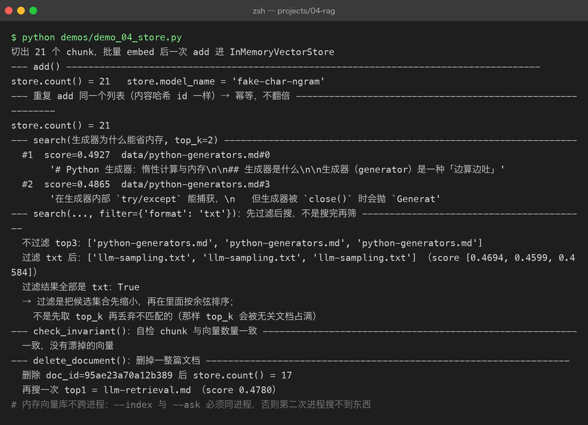

Project 04 — Chapter 04：Vector Database【向量数据库】
状态：✅ 已成文（文档先行，作为 src/ 落地设计依据） 对应代码：
src/rag/vector_store.py（BaseVectorStore+InMemoryVectorStore+ChromaVectorStore）
1. 本章要解决什么问题
Chapter 03 结束时，每个 Chunk 都有了自己的向量。现在用户提问，query 也变成了向量——接下来要在几百上千条文档向量里，找出和 query 向量最近的那几条。
第一反应往往是：这有什么难的？数据库里存了向量字段，SELECT ... WHERE ... LIKE 或者写个循环算相似度不就行了？
你以为： 向量检索就是把所有向量都比一遍，选最近的
实际上： 全量比对是 O(N × d)（N 条向量 × d 维），
10 万条 × 1024 维的库，每次查询都是几千万次浮点运算，
用户等不起，服务器也算不起用 LIKE 更不行——它匹配的是字符串，而我们的相似度在几何空间里，SQL 的 WHERE 子句根本表达不了"余弦距离最近"。这是向量数据库作为一个独立品类存在的根本原因。
本章目标：
设计可替换的向量存储层：先手写暴力检索吃透原理，再切到 Chroma 获得持久化与 ANN 能力。
2. 为什么需要这个知识
为什么普通数据库做不了：从 O(N) 到 ANN
向量检索的本质是最近邻搜索【Nearest Neighbor Search】。精确解只有暴力比对 O(N)，于是工业界的答案是 ANN【Approximate Nearest Neighbor，近似最近邻】：放弃"绝对最近"，换取快几个数量级的检索——召回 top-10 时偶尔漏掉真正第 3 名，但对 RAG 来说"差不多最近的几条"完全够用。
主流索引算法里，Chroma 默认使用的 HNSW【Hierarchical Navigable Small World，分层可导航小世界图】的直觉一句话就能讲：把向量组织成一张"跳表层"的图——最上层稀疏边长，像高速公路；往下每层更稠密、边更短，像城市道路。查询从高速公路粗定位，再逐层下钻精确逼近，不用遍历所有点就能到达近邻。 和跳表（skip list）的分层思想同源，数学细节本章不展开。
三阶段路线
学习路线和工程路线在这里是同一条：
| 阶段 | 方案 | 定位 |
|---|---|---|
| ① 纯 Python：dict + NumPy 暴力余弦 | InMemoryVectorStore | 先懂原理。几百条文档完全够用，且每一步都透明可见 |
| ② Chroma | ChromaVectorStore | pip install 即用、本地持久化、自带 HNSW。个人知识库首选 |
| ③ Milvus | 生产级 | 分布式、十亿级向量，需要单独部署集群——本章提一句即可，不落地 |
先写阶段 ① 的理由和 P02/P03 一脉相承：框架当黑盒之前，先用 50 行代码把白盒拆开看一遍。 否则 Chroma 报一个"dimension mismatch"，你连报错在说什么都不知道。
3. 核心概念
3.1 存储抽象：BaseVectorStore
Java 里你天天写 Repository 接口：interface ChunkRepository { void save(...); List<Chunk> search(...); }，内存实现给测试，JPA 实现给生产。Python 里同一个模式，一个 ABC 三个实现：
# src/rag/vector_store.py
from abc import ABC, abstractmethod
from .chunker import Chunk
class BaseVectorStore(ABC):
"""向量存储抽象：存 (Chunk, vector)，查 top-k。"""
@abstractmethod
def add(self, chunks: list[Chunk], vectors: list[list[float]],
model: str = "") -> None:
"""入库。model 记录嵌入模型名，供查询时校验（Chapter 03 坑 1）。"""
...
@abstractmethod
def search(self, query_vector: list[float], top_k: int = 5,
filter: dict | None = None) -> list[dict]:
"""返回 [{chunk, score}, ...]，按相似度降序。filter 为 metadata 过滤。"""
...
@abstractmethod
def count(self) -> int: ...
@abstractmethod
def clear(self) -> None: ...
@abstractmethod
def delete_document(self, doc_id: str) -> None:
"""删除一个文档的所有 chunk 及其向量。"""
...注意 search 的返回是 chunk + score 的组合——检索结果必须带相似度分数，下游（Chapter 05 的 rerank 和阈值过滤）都要用。
3.2 阶段 ①：NumPy 暴力余弦
把余弦相似度亲手算一遍，这个知识就永远是你的了：
import numpy as np
class InMemoryVectorStore(BaseVectorStore):
model_name = "" # 记录入库时用的嵌入模型
def __init__(self) -> None:
self._chunks: dict[str, Chunk] = {} # chunk_id -> Chunk
self._matrix: np.ndarray | None = None # (N, dim) 矩阵
self._ids: list[str] = [] # 矩阵第 i 行对应的 chunk_id
self._meta: list[dict] = [] # 与矩阵行对齐的元数据
def add(self, chunks, vectors, model: str = "") -> None:
new_rows = np.asarray(vectors, dtype=np.float32)
self._matrix = new_rows if self._matrix is None else np.vstack([self._matrix, new_rows])
for c in chunks:
self._chunks[c.chunk_id] = c
self._ids.append(c.chunk_id)
self._meta.append(dict(c.metadata))
self.model_name = model or self.model_name
def search(self, query_vector, top_k: int = 5, filter: dict | None = None):
if self._matrix is None or len(self._ids) == 0:
return []
q = np.asarray(query_vector, dtype=np.float32)
# 归一化后点积 == 余弦相似度
q = q / (np.linalg.norm(q) or 1.0)
m = self._matrix / (np.linalg.norm(self._matrix, axis=1, keepdims=True) + 1e-9)
scores = m @ q # (N,) 一次矩阵乘算完全部相似度
order = np.argsort(-scores)
results = []
for i in order:
meta = self._meta[i]
if filter and not all(meta.get(k) == v for k, v in filter.items()):
continue # 先过滤后搜，见 3.3
results.append({
"chunk": self._chunks[self._ids[i]],
"score": float(scores[i]),
})
if len(results) >= top_k:
break
return results
def count(self) -> int:
return len(self._ids)
def clear(self) -> None:
self._chunks.clear(); self._ids.clear(); self._meta.clear(); self._matrix = None
def delete_document(self, doc_id: str) -> None:
keep = [i for i, cid in enumerate(self._ids)
if self._chunks[cid].doc_id != doc_id]
self._matrix = self._matrix[keep]
self._ids = [self._ids[i] for i in keep]
self._meta = [self._meta[i] for i in keep]
for cid in [c for c, chk in self._chunks.items() if chk.doc_id == doc_id]:
del self._chunks[cid]读懂三个点，这段代码就没白写：
m @ q一行就是"全部向量与 query 的余弦相似度"——NumPy 把 O(N) 次点积压成一次矩阵乘，这就是几百条文档时"暴力也够快"的原因。- 归一化之后点积等价于余弦相似度（Chapter 03 讲过的归一化红利）。
filter在取 top_k 之前逐行检查——这正是 3.3 要对比的"先过滤后搜"。
3.3 metadata 过滤：先过滤后搜 vs 先搜后过滤
需求：只在"某个 PDF"里检索。两种做法：
| 顺序 | 做法 | 问题 |
|---|---|---|
| 先搜后过滤 | 全库搜 top-50，再按 metadata 筛 | 筛完可能只剩 1 条甚至 0 条——top-50 里根本没有目标文档的内容 |
| 先过滤后搜 | 先把候选集缩到目标文档，在子集内搜 top-5 | 正确：top-5 一定来自过滤后的集合 |
所以抽象层的约定是：filter 语义 = 先过滤后搜。Chroma 的 where 参数也是这个语义。
Java 里这就像 SQL 的 WHERE 在 ORDER BY ... LIMIT 之前生效——你不会先 LIMIT 5 再 WHERE，同样的直觉。

3.4 阶段 ②：ChromaVectorStore
import chromadb
class ChromaVectorStore(BaseVectorStore):
def __init__(self, persist_directory: str = "./data/chroma",
collection_name: str = "rag_chunks"):
self._client = chromadb.PersistentClient(path=persist_directory)
self._collection = self._client.get_or_create_collection(
name=collection_name,
metadata={"hnsw:space": "cosine"}, # 指定余弦距离
)
def add(self, chunks, vectors, model: str = "") -> None:
self._collection.upsert(
ids=[c.chunk_id for c in chunks],
embeddings=[[float(x) for x in v] for v in vectors],
documents=[c.text for c in chunks],
metadatas=[{**c.metadata, "_model": model, "doc_id": c.doc_id,
"index": c.index} for c in chunks],
)
def search(self, query_vector, top_k: int = 5, filter: dict | None = None):
kwargs: dict = {
"query_embeddings": [[float(x) for x in query_vector]],
"n_results": top_k,
"include": ["documents", "metadatas", "distances"],
}
if filter:
kwargs["where"] = filter # 先过滤后搜
res = self._collection.query(**kwargs)
out = []
for cid, doc, meta, dist in zip(res["ids"][0], res["documents"][0],
res["metadatas"][0], res["distances"][0]):
chunk = Chunk(chunk_id=cid, doc_id=meta.get("doc_id", ""),
text=doc, index=meta.get("index", 0), metadata=meta)
out.append({"chunk": chunk, "score": 1.0 - float(dist)}) # 距离 → 相似度
return out
def count(self) -> int:
return self._collection.count()
def clear(self) -> None:
cid = self._collection.name
self._client.delete_collection(cid)
self._collection = self._client.get_or_create_collection(
name=cid, metadata={"hnsw:space": "cosine"})
def delete_document(self, doc_id: str) -> None:
self._collection.delete(where={"doc_id": doc_id})值得注意的两处：upsert（而不是 add）让重复入库变成覆盖，呼应 Chapter 01 的内容哈希幂等设计；Chroma 返回的是距离，score = 1 - distance 换算回相似度，和 InMemoryVectorStore 的语义对齐——这正是先定义抽象层的红利：上层代码对两个实现零感知。
4. 动手实现（设计稿）
以下代码将在 src/rag/vector_store.py 落地时实现。目标结构：
src/rag/
├── vector_store.py # BaseVectorStore / InMemoryVectorStore / ChromaVectorStore
└── ...关键实现思路：
- 存储工厂，与 Chapter 03 的 embedding 工厂呼应：
def create_vector_store(config: dict) -> BaseVectorStore:
backend = config.get("backend", "memory")
if backend == "memory":
return InMemoryVectorStore()
if backend == "chroma":
return ChromaVectorStore(persist_directory=config.get("persist_directory",
"./data/chroma"))
raise ValueError(f"未知向量库 backend: {backend!r}")- 查询侧的模型校验（Chapter 03 坑 1 的防线落地）：入库时模型名存进 metadata 的
_model字段，查询前取出比对，不一致抛ValueError。
- 端到端串联自测（用 Fake，不需要 API key）：
ingest → chunk → FakeEmbeddingClient.embed → store.add → store.search(query_vector, filter={"format": "md"})，断言结果非空且分数降序。整条链路离线可跑，是后面 05 章真实检索的地基。
- 依赖：
pip install chromadb numpy。
- Milvus 提一句：当向量到千万级、需要多副本和标量混合索引时再上 Milvus（独立部署、gRPC 接入）。个人知识库和单机服务，Chroma 的上限远比想象中高，不要提前优化。
5. 踩坑清单
坑 1：Chroma collection 名字不符合规范，报错信息看不懂
- 现象：
get_or_create_collection(name="我的 知识库!")报ValueError: Expected collection name ... (3-63 characters, ...)，一长串正则让人摸不着头脑。 - 原因：Chroma 的 collection 名要求：3~63 字符、只允许字母数字和
-/_、必须以字母或数字开头结尾——中文名、空格、!、以-开头都不行。 - 正确做法：用固定英文 snake_case（如
rag_chunks），要区分多知识库时用配置里的英文 key 拼接，不要用用户输入的任意字符串当 collection 名。
坑 2：持久化目录被 .gitignore 漏掉，仓库里塞了半 GB 的向量数据
- 现象：
git status里冒出data/chroma/几百个文件；或者反过来，同事 clone 下来发现向量库是空的，"检索怎么没结果"。 - 原因：默认
persist_directory="./data/chroma"落在项目根目录，而.gitignore可能没覆盖到（数据被误提交），或覆盖过头把data/全局忽略导致误以为程序坏了。 - 正确做法：把持久化目录约定为
./data/并加入.gitignore；入库写一个"重建脚本"（从原始文档全量重建索引）代替提交数据本身——向量库永远是可再生的派生数据，源文档才是 source of truth，和 Java 项目不把 target/ 提交进 git 是同一个道理。
坑 3：维度不一致，报错发生在查询而不是入库
- 现象：
InvalidDimensionException: Embedding dimension 1536 does not match collection dimensionality 1024。更隐蔽的变体：换了 embedding 模型重建索引但没清空旧 collection，检索结果里混着两个模型的向量，分数全是垃圾。 - 原因：collection 在第一次写入时就固定了维度；同一模型空间校验通过、跨模型混存时 Chroma 不会替你校验"是不是同一个模型"。
- 正确做法：入库和查询前都校验模型一致性（见 4.2）；换模型 = 换 collection 名（如
rag_chunks_bge_m3）或先clear()再全量重建。就像 Java 里改了实体字段结构，老表必须跑 migration——向量空间变了，库必须重建。
坑 4：删除文档时向量和 chunk 元数据不同步
- 现象：删除某文档后再检索，top 结果里出现"幽灵 chunk"——
self._chunks里查不到对应的 Chunk，直接KeyError；或者count()显示的条数和能检索到的条数对不上。 - 原因：删除时只删了向量矩阵的行、忘了同步删
chunks字典（或反过来）；自研存储里这种双结构不同步是最常见 bug。 - 正确做法：
delete_document里对矩阵行、_ids、_meta、_chunks四处一起删（见 3.2 实现），并写一个不变量断言测试：count() == len(_ids) == len(_chunks)，任何时刻三者必须相等。
坑 5：把"先搜后过滤"当成了正确语义
- 现象：指定"只检索某 PDF"后，10 次里有 3 次结果为空或混入其他文档——数据明明都在库里。
- 原因：实现成了"全库 top-k 再按 metadata 筛"（3.3 表格里的第一种），目标文档的内容根本没进 top-k 候选。
- 正确做法：过滤条件下沉到检索层（自研实现在打分循环里跳过不匹配行；Chroma 用
where参数），保证 top-k 来自过滤后的子集。
6. 自检清单
- [ ] 能说清
LIKE/全表扫描为什么做不了向量检索，ANN 用什么换了什么 - [ ] 能用"高速公路 + 城市道路"讲一遍 HNSW 的直觉
- [ ] 亲手实现过 NumPy 版余弦检索，并能解释
m @ q那一行在算什么 - [ ] 能说清"先过滤后搜"和"先搜后过滤"的区别及各自的后果
- [ ] 两个实现（InMemory / Chroma）能在同一个
BaseVectorStore抽象下互换 - [ ] 知道换 embedding 模型时向量库必须重建，以及 collection 命名规范
7. 真实运行截图（第十一章补充）
第十一章用 ChromaVectorStore 把向量库从内存换成了持久化落盘。两张截图分别展示「Chroma 落盘与重启恢复」和「换模型时的护栏」：


关键结论：持久化目录里出现
_modelsidecar 文件，专门用来在进程重启后恢复model_name，否则check_model()这道换模型护栏会失效；Chroma 的 metadata 也不收list，入库前要把headings这类列表压成字符串。
上一章：03-embedding.md —— 文本变成了向量，语义第一次可以被计算
下一章：05-retrieval.md —— 库建好了，检索链路怎么把"最近的几条"变成模型的上下文？
回到项目主页：../README.md